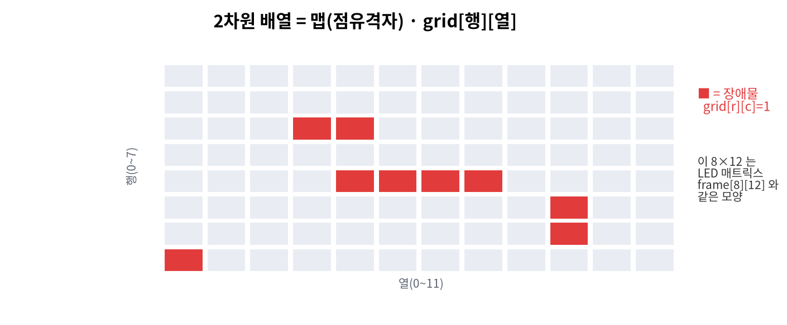
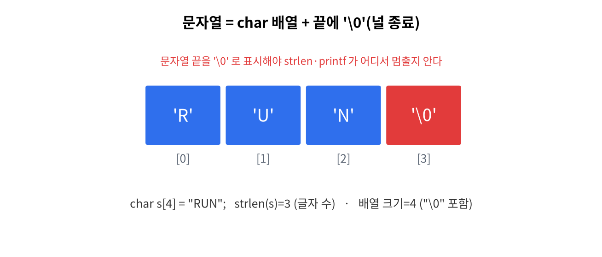

11주차 · 배열 (2차원) · 통신 입문 + WiFi 컨트롤러¶
C언어 · 미래모빌리티학과 | CLO2·CLO4 | 교재 Ch11


학습 목표¶
- 2차원 배열과 문자 배열(문자열 기초)을 사용한다.
- 점유격자(맵)를 2차원 배열로 표현하고, WiFi로 보드를 제어한다.
- 통신이 ROS2 토픽의 전 단계임을 이해한다.
강의 해설¶
11주차는 배열이 선(line)에서 면(grid)으로 확장되는 시간이다. 1차원 배열이 센서값을 시간 순서로 담는다면, 2차원 배열은 공간을 담을 수 있다. LED Matrix의 8행 12열, 주차장의 격자 지도, 로봇의 점유격자 지도는 모두 "행과 열로 나뉜 공간"이라는 공통점을 가진다.
문자열은 C에서 특별한 자료형처럼 보이지만 실제로는 문자 배열이다. 끝에 '\0'이 있어야 문자열의 끝을 알 수 있다는 점이 중요하다. 이 사실을 이해하면 통신 프로토콜도 더 쉽게 보인다. "RUN", "STOP", "S,42.0,25.0,RUN" 같은 데이터는 결국 문자들이 순서대로 놓인 배열이고, 프로그램은 그 배열을 해석해 의미를 만든다.
WiFi 컨트롤러 실습은 "배열과 문자열이 통신으로 이어지는 순간"이다. 브라우저에서 /run 요청을 보내면 Arduino는 그 문자열을 읽고 상태를 바꾼다. 지금은 작은 웹 버튼이지만, 후반부 ROS2에서는 토픽 이름과 메시지를 통해 같은 일이 벌어진다. 따라서 이 주차는 2차원 배열, 문자열, 네트워크 명령이 한곳에서 만나는 중요한 연결 지점이다.
1. 이론¶
1.1 2차원 배열¶
- 메모리에는 행 우선(row-major)으로 연속 저장된다. - 중첩 반복으로 전체 순회:1.2 문자열 = 문자 배열¶
C의 문자열은 char 배열 + 끝에 널 문자 '\0'.
널 종료
문자열은 반드시 '\0'로 끝나야 한다. 버퍼 크기는 글자수+1 이상.
1.3 점유격자(occupancy grid) 맛보기¶
자율주행의 지도 표현: 칸마다 0(빈 공간)/1(장애물). 2차원 배열이 그 기초.
1.4 통신 입문 → 모빌리티¶
- 시리얼/WiFi로 명령·데이터를 주고받는다. 우리가 쓰는 텍스트 프로토콜
"S,42,25,RUN"은 CAN 프레임의 축소판.
트렌드: 차량 통신 (2026)
차내 통신은 CAN/LIN → 차량용 Ethernet으로 확장 중. 이 과목의 "프로토콜로 데이터 주고받기"가 4학년 「모빌리티 통신」의 토대다. → 트렌드 검토
2. 핵심 용어 정리¶
| 용어 | 설명 |
|---|---|
| 2차원 배열 | 행×열 격자형 배열 |
| row-major | 행 우선 연속 저장 방식 |
| 문자열 | char 배열 + '\0' |
| 널 종료 | 문자열 끝 표시 '\0' |
| 점유격자 | 칸으로 장애물 유무를 표현한 지도 |
| CAN | 차내 신호 통신 버스 |
3. 실습¶
실습 11-1 · 2차원 맵 출력 (예제 ex08_grid2d.c)¶
8×12 점유격자(occupancy grid)에 장애물을 찍고 중첩 반복으로 출력·집계.
이 8×12 는 LED 매트릭스 frame[8][12] 와 같은 모양이라 하드웨어로 바로 이어진다.
실습 11-2 · 문자열 다루기¶
state 문자열 비교(strcmp)로 "STOP"이면 경고 출력.
실습 11-3 · WiFi 컨트롤러 (아두이노)¶
폰 브라우저 버튼으로 보드 LED/동작 제어(code/arduino/11_wifi_car).
예제: code/arduino/11_wifi_car/11_wifi_car.ino
실행 순서:
arduino_secrets.h.example을arduino_secrets.h로 복사한다.- WiFi 이름과 비밀번호를 수정한다.
- 업로드 후 시리얼 모니터에서 IP 주소를 확인한다.
- 같은 네트워크의 노트북/휴대폰 브라우저에서
http://보드IP/로 접속한다. RUN,SLOW,STOP버튼을 누르고 LED Matrix 변화를 확인한다.
11주차에서 꼭 이해할 연결¶
| C 개념 | Arduino 예제에서의 모습 | ROS2에서의 확장 |
|---|---|---|
| 2차원 배열 | frame[8][12] LED 픽셀 |
점유격자 지도 |
| 문자열 | HTTP 요청 "GET /run" |
토픽 이름, 메시지 문자열 |
| 조건문 | 요청 경로에 따라 상태 변경 | 메시지 값에 따라 주행 판단 |
| 함수 | setState("RUN") |
콜백 함수 |
네트워크 디버깅
IP 주소가 출력되지 않으면 보드가 WiFi에 연결되지 않은 것이다. SSID/비밀번호, 2.4GHz 지원 여부, 같은 네트워크 접속 여부를 먼저 확인한다.
4. 과제¶
- 2차원 8×12 맵 출력, (도전) WiFi로 표정/동작 제어.
- 도전:
/packet경로를 추가해 현재 상태를S,42.0,25.0,RUN같은 문자열로 브라우저에 출력하게 하라.
5. 참조¶
- 교재 Ch11 · 자료
code/arduino/11_wifi_car
형성평가 체크포인트¶
- 2차원 인덱싱 · [ ] 문자열 널 종료 · [ ] WiFi 제어 동작 · [ ] CAN 키워드 인지
연습문제¶
int map[8][12];의 전체 원소 개수는?- 문자열
"RUN"을 저장하려면char배열 크기가 최소 몇이어야 하는가? - 두 문자열이 같은지 비교하는 표준 함수의 이름은?
정답 및 해설
96— 8 × 12.4— 'R','U','N' + 널 문자'\0'.strcmp(같으면 0을 반환).
🖼 그림으로 복습 — 2차원 배열 = 점유격자(occupancy grid) 맵